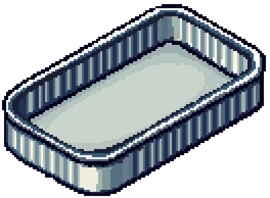
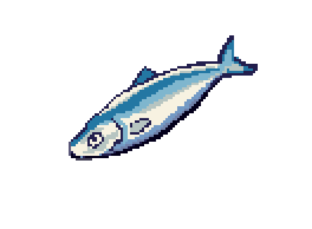
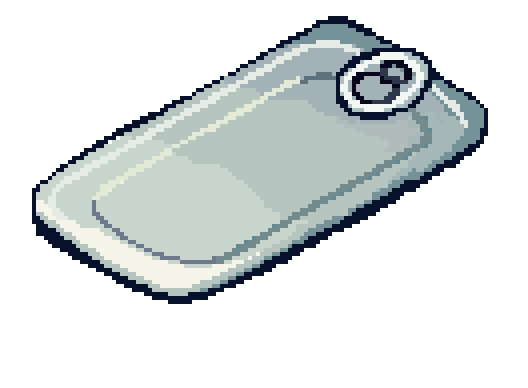
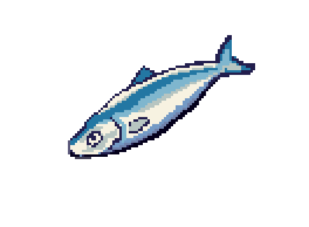
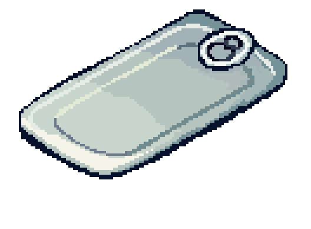
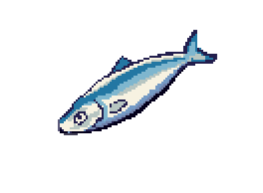
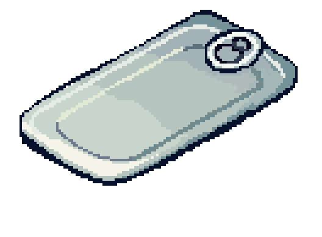

Sardine Tin Anatomy
Click on the parts of the sardine tin to learn more about its anatomy.
Did you know? Sardines are named after the Mediterranean island of Sardinia, where they were once abundant!

 




